MIS PROYECTOS
Proyectos desarrollados en Android Studios (Android - Kotlin - Jetpack Compose)
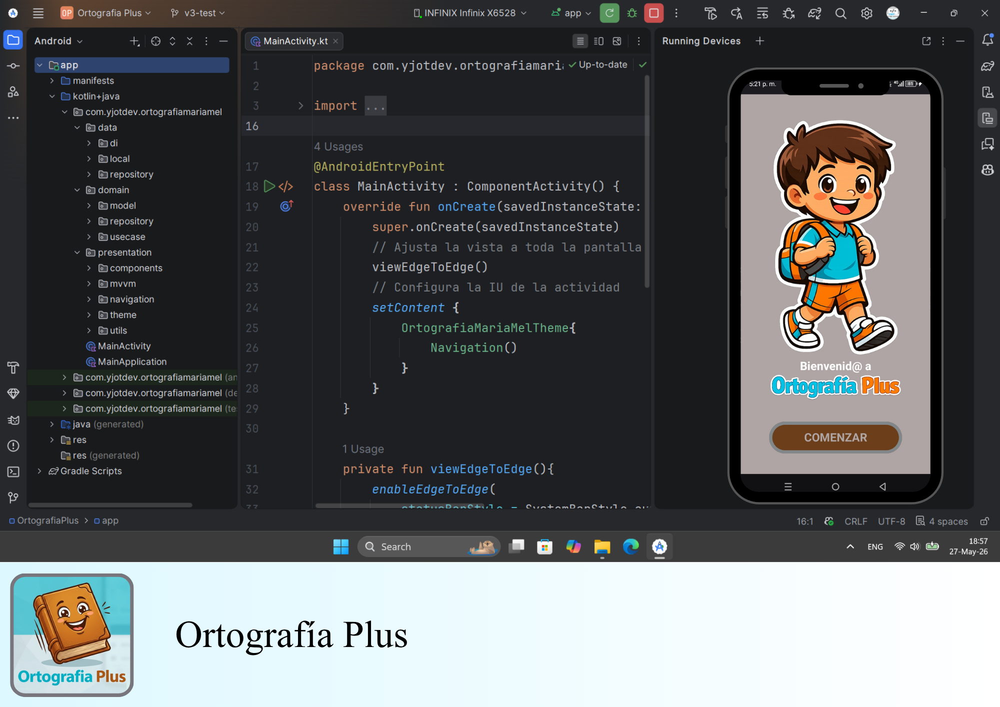
Ortografía Plus
- Patrón de diseño arquitectónico: MVVM + Clean Architecture
- Inyección de dependencias: Hilt
- Descripción: Esta app está orientada a la educación, cuenta con varios ejercicios
sobre
la temática de ortografía, tiene dos modelos de actividades: Tarjetas de pares y Completado de oraciones
con
multi-opciones. Los ejercicios fueron creados según la estrategia de enseñanza y aprendizaje:
Gamificación.
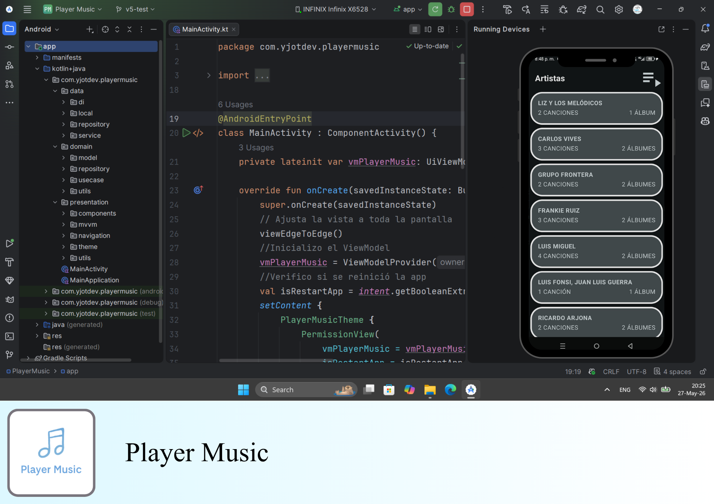
Reproductor de música
- Patrón de diseño arquitectónico: MVVM + Clean Architecture
- Base de datos: Room (Local)
- Inyección de dependencias: Hilt
- Descripción: Esta app es un reproductor de música local, obtiene la música guardada
de
la
memoria interna y SD del dispositivo, ofrece la opción de agregar y eliminar música de una playlist, así
como crear o quitar una playlist, puede reproducir música en aleatorio, o en secuencia, así como repetir
la
misma música o una única vez.
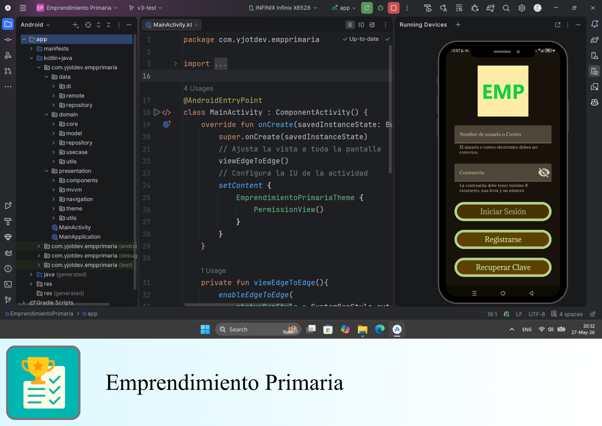
Gamificación sobre emprendimiento
- Patrón de diseño arquitectónico: MVVM + Clean Architecture
- Base de datos: MySQL
- API: Node
- Inyección de dependencias: Hilt
- Descripción: Esta app está orientada a la educación, cuenta con varios ejercicios
sobre
la temática de emprendimiento, tiene cuatro modelos de actividades: Verdadero y falso, Elegir respuesta
correcta, Escribir respuesta correcta y Lectura comprensiva. Los ejercicios fueron creados según la
estrategia de enseñanza y aprendizaje: Gamificación.
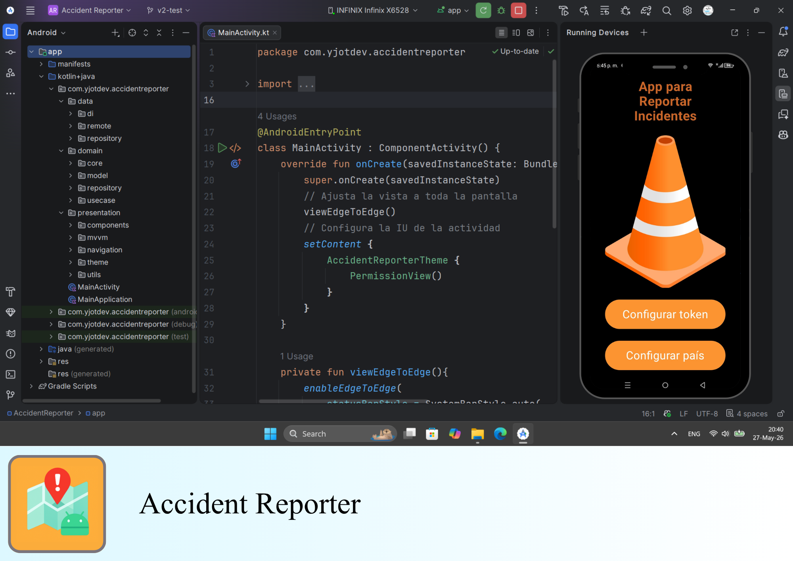
Accident Reporter
- Patrón de diseño arquitectónico: MVVM + Clean Architecture
- Base de datos: MySQL
- API: Node + Google Maps
- Inyección de dependencias: Hilt
- Descripción: Esta app le permite al usuario elegir una ubicación en el mapa para
reportar
algún incidente, luego de elegir una ubicación se mostrara un formulario donde debe elegir el tipo de
incidente y describir el incidente, luego la app obtiene la fecha actual en su dispositivo y guarda el
reporte en una base de datos.
Proyectos desarrollados en Android Studios (Android - Kotlin - XML)
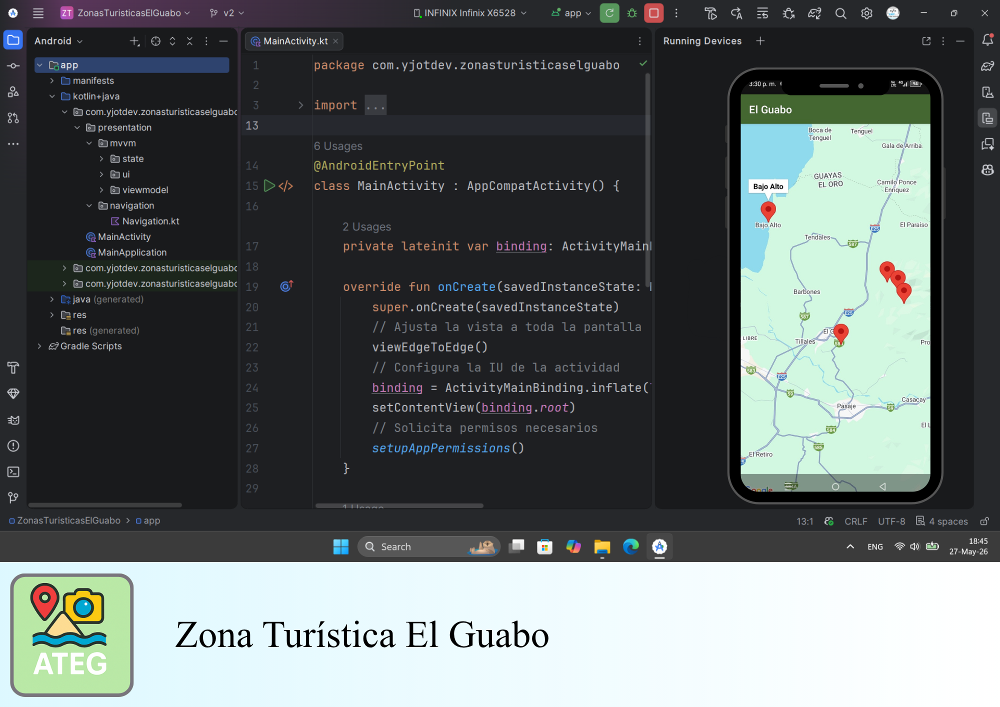
Mapa turístico de El Guabo
- Patrón de diseño arquitectónico: MVVM
- Inyección de dependencias: Hilt
- API: Google Maps
- Descripción: Esta app permite navegar por los principales centros turísticos de El
Guabo,
utilizando la API de Google Maps, en el mapa se indican las ubicaciones y si se da un clic sobre alguna
de
ellas se muestra el nombre del lugar y si se da doble clic se abre una nueva ventana con una imagen y
descripción del lugar.
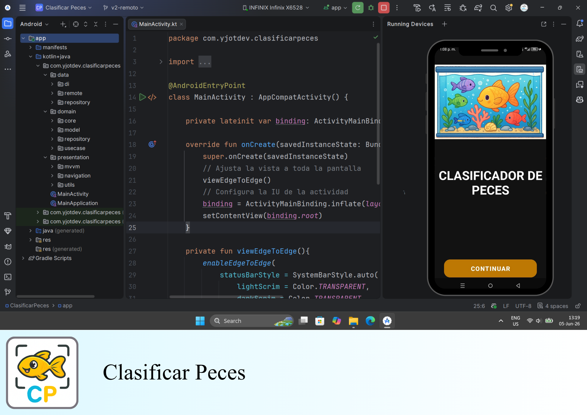
Clasificador de raza de peces
- Patrón de diseño arquitectónico: MVVM + Clean Architecture
- API: Node
- Inyección de dependencias: Hilt
- IA: Red neuronal con Keras y TensorFlow
- Descripción: Esta app permite analizar una imagen de tres tipos comunes de peces
pequeños
de acuario obtenida desde la cámara del dispositivo o la galería de fotos, con el fin de determinar la
probabilidad de que sea un pez: Guppy, Betta o Molly, según su forma y color.
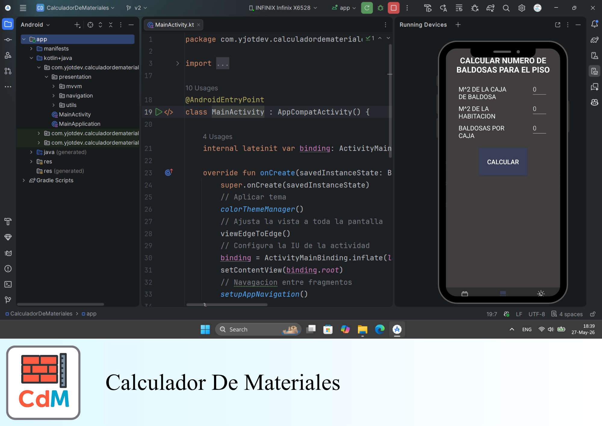
Calculadora de materiales
- Patrón de diseño arquitectónico: MVVM
- Inyección de dependencias: Hilt
- Descripción: Esta app permite calcular el número de ladrillos necesarios para
construir
una pared y el número de baldosas necesarias para instalarlas en el piso, si se está en la opción pared
se
solicita ingresar sus dimensiones (alto y largo), así como el tipo de ladrillo o bloque a usar, si se
está
en la opción baldosas del piso se solicita ingresar los metros cuadrados del piso y de las baldosas, así
como el número de baldosas por caja.
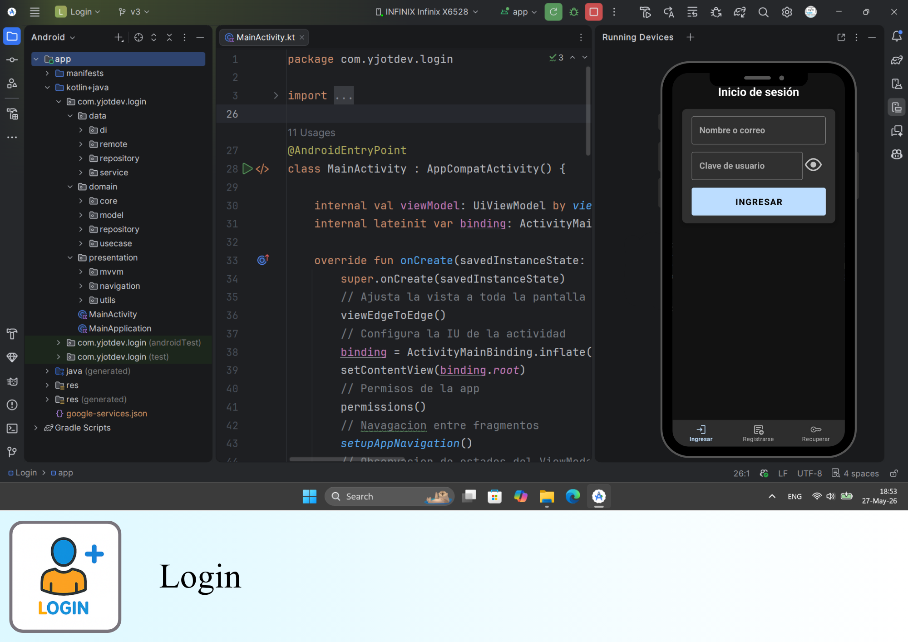
Login
- Patrón de diseño arquitectónico: MVVM + Clean Architecture
- Base de datos: MySQL
- API: Node
- Inyección de dependencias: Hilt
- Descripción: Esta app proporciona un ecosistema seguro, moderno y eficiente para
la gestión de cuentas, pagos y comunicaciones, adaptado a las necesidades actuales de los usuarios
y alineado con las mejores prácticas de desarrollo Android.
Proyectos desarrollados en Visual Studios (Xamarin - C# - XAML)
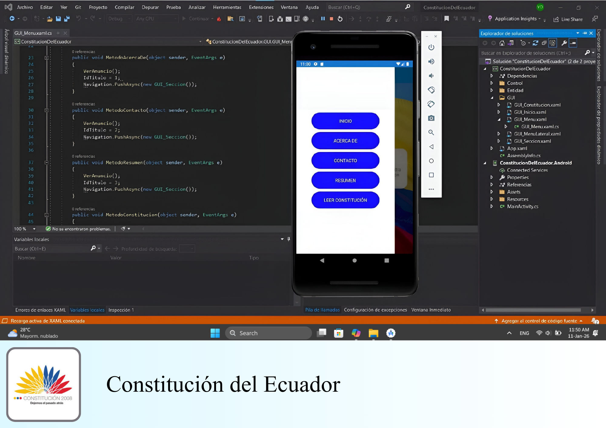
Lector de la Constitución del Ecuador
- Patrón de diseño arquitectónico: MVC
- Base de datos: MySQL
- API: Node
- Descripción: Esta app permite consultar los artículos de la constitución del Ecuador
del
2008, ofrece un buscador para escribir el artículo específico a leer, además contiene una vista de
información sobre la importancia de la constitución.
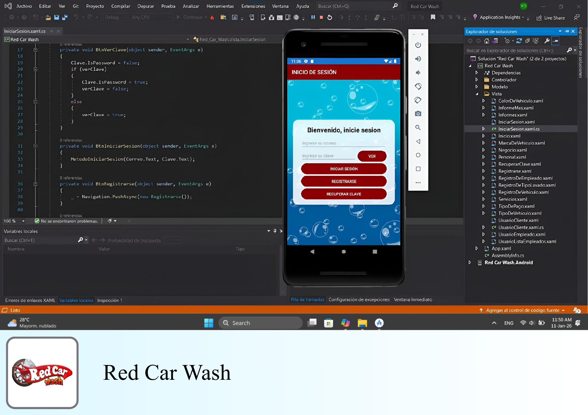
Gestor de lavado de vehículos
- Patrón de diseño arquitectónico: MVC
- Base de datos: MySQL
- API: Node
- Descripción: Esta app permite iniciar sesión, recuperar clave y crear usuario, además
de
registrar personal e inventario de recursos relacionado con una lavadora de carros.
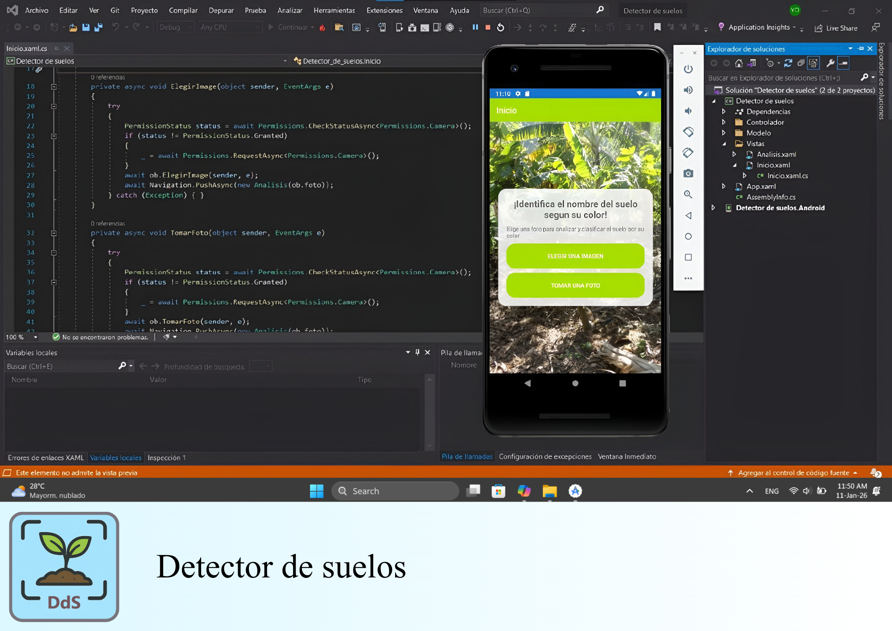
Analizador y clasificador de tonalidad del suelo
- Patrón de diseño arquitectónico: MVC
- IA: Red neuronal con Keras y TensorFlow
- Descripción: Esta app permite analizar una imagen de un suelo obtenida desde la
cámara
del dispositivo o la galería de fotos, con el fin de determinar la probabilidad de que sea un suelo
fértil
o
estéril, según su tonalidad.
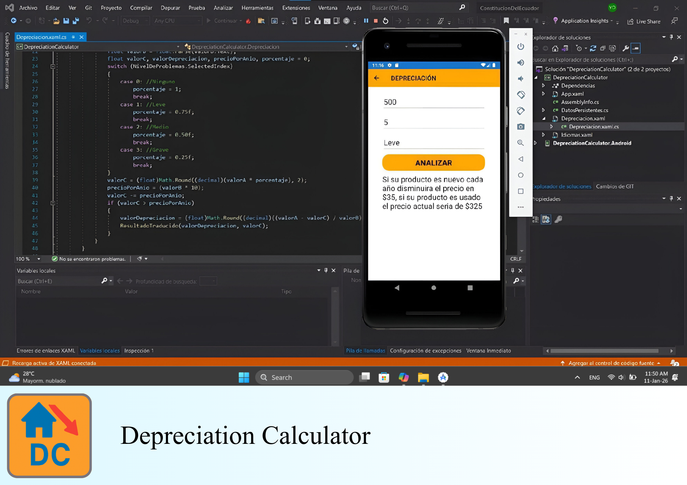
Calculador de depreciación de un producto
- Patrón de diseño arquitectónico: MVC
- Descripción: Esta app permite calcular el valor de depreciación de un objeto con base
a
su precio actual, estado del objeto y años de envejecimiento.